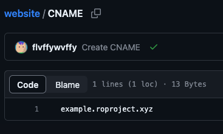
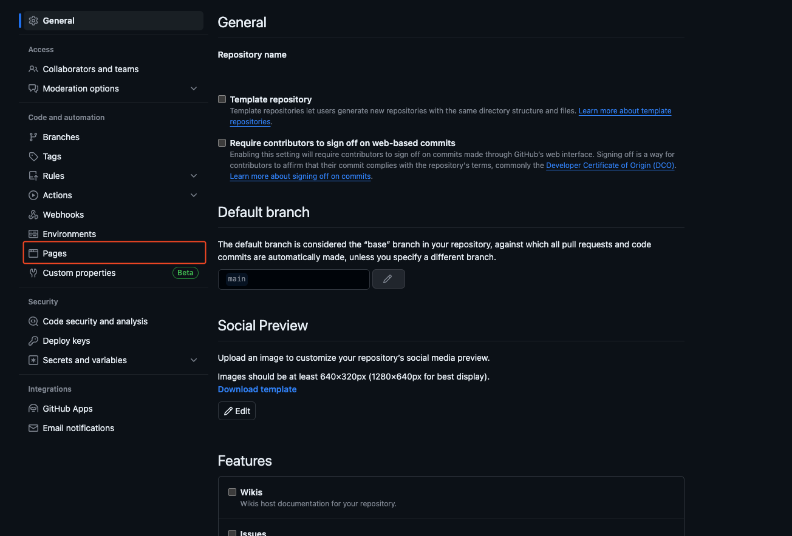
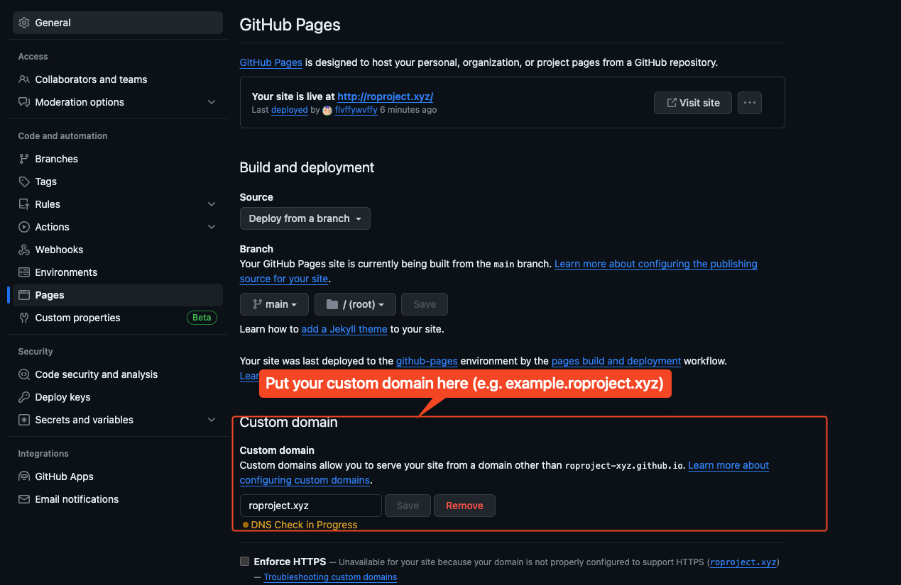

free subdomains for roblox projects.
Setup github pages in your repo. Make sure you have some content as I'm not accepting requests for websites with nothing on them. They must be related to roblox.
Now you need to choose a name. This should be similar to your gh pages url (e.g. hello.github.io = hello.roproject.xyz)
Add a CNAME file in your gh-pages branch and
point it towards your chosen domain.
Open a pull request that adds your domain to
active-domains.json. Your domain should be live
within 48hrs depending on when I add it, I will try to check
the PRs daily.
I haven't found many services like this for roblox developers, and github pages urls tend to be long and hard to remember. Here, you can get your desired domain for 100% free! roproject.xyz is the roblox equivalent of js.org and others
Add CNAME file in the root of your github pages branch
Goto github pages settings
Add chosen domain here
Open PR on the main repo and wait! It may take up to 48hrs for me to add it.